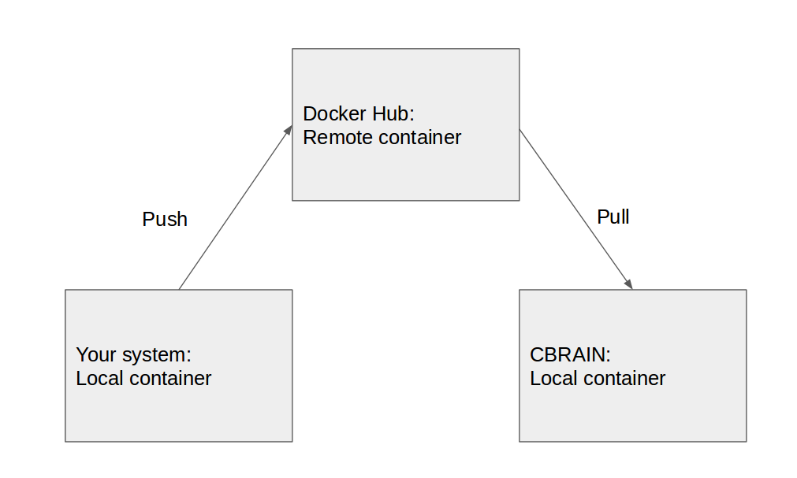

Why use Docker in CBRAIN?
- Bottleneck of tools integration in CBRAIN
- Painful to install pipeline on Compute Canada
- Example: Mammouth-S (CBRAIN) vs Mammouth-P
- Should (re)-install on each cluster
- Better control of the version by owner of the pipeline
- Open platform for distributed applications
- Allow you to package your app with all its dependencies
- Motto: Build, Ship, Run
- A container/image = Piece of software + everything it need to run
- E.g: Code, system tools, libraries...
- Software always run the same (not depending of the environment)
- Containers include app and all the dependencies
- BUT share the kernel
- So it is light, more portable and efficient than VM
- It is supported by Compute Canada! (On Guillimin for the moment, Mammouth soon)
- External service for people to manage their containers
- Similar to Github but for Docker container
- Public/private repo
- Collaborators, can have some privileges (ex: push new version)
Relationship between Docker/Docker Hub/CBRAIN

How to install Docker for development?
- Not so difficult, all information here
- Example on Ubuntu
# Update package index
$ sudo apt-get update
# Install docker-engine
$ sudo apt-get install docker-engine
# Start docker daemon
$ sudo service docker
# Run the hello-world to test
$ sudo docker run hello-world
# Add a docker group (optionnal but recommended)
$ sudo usermod -aG docker username
Three ways to prepare a containers
- Interactive
- Dockerfile
- Autobuild
How to package pipeline: interactive
- Maybe not the best choice but easy
- Incremental process with no real history
How to package Pipeline: interactive
# Download/extract/run centos images with docker
$ docker run -it centos
Unable to find image 'centos:latest' locally
latest: Pulling from library/centos
a3ed95caeb02: Pull complete..
Digest: sha256:381f21e4c7b3724c6f420b2bcfa6e13e47ed155192869a2a04fa10f944c78476
Status: Downloaded newer image for centos:latest
How to package Pipeline: interactive
# Install git
[root@5af8c69637b2 /]# yum install git
# Clone git repo
[root@5af8c69637b2 /]# git clone https://github.com/natacha-beck/bash_hello_world.git
# Run the hello world example
[root@5af8c69637b2 /]# ./bash_hello_world/hello_world.sh
Hello World!
[root@5af8c69637b2 /]# exit
# Save your images
$ docker commit -m "Git + HelloWord" 5af8c6 nbeck/cbrain_docker_i
How to package Pipeline: interactive
# Run the script 'outside' of the container
$ git images
$ docker run nbeck/cbrain_docker_i ./bash_hello_world/hello_world.sh
Hello World!
How to package Pipeline: Dockerfile
- Better version control
- Better documentation
How to package Pipeline: Dockerfile
$ mkdir docker_d
$ cd docker_d
$ vi DockerFile
How to package Pipeline: Dockerfile
FROM centos
RUN yum update -y && yum install -y git
RUN git clone https://github.com/natacha-beck/bash_hello_world.git
How to package Pipeline: Dockerfile
$ docker build -t nbeck/cbrain_docker_d .
$ docker build -t nbeck/cbrain_docker_d .
Sending build context to Docker daemon 2.048 kB
Step 1 : FROM centos
---> d0e7f81ca65c
Step 2 : RUN yum update -y && yum install -y git
---> Running in 5acbe72d2038
Loaded plugins: fastestmirror, ovl
...
Successfully built 5f2ec36899e5
How to package Pipeline: Dockerfile
# Run the script 'outside' of the container
$ git images
$ docker run nbeck/cbrain_docker_d ./bash_hello_world/hello_world.sh
Hello World!
- Dockerfile available to anyone with acess to you Docker Hub repo
- Your repo is kept up-to-date with code changes automatically
- Idea link Guthub repo and Docker Hub repo